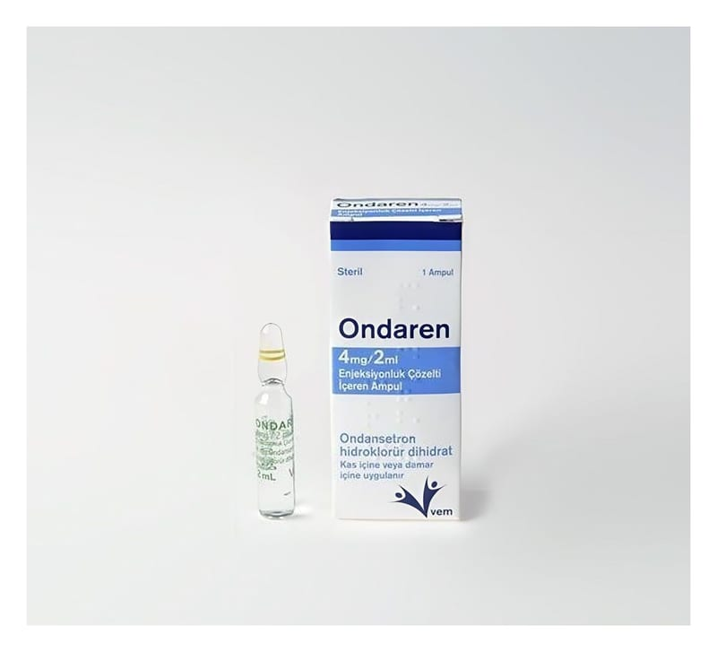

Ondaren 4 mg/2 ml Enjeksiyonluk Çözelti İçeren Ampul, 1 Adet

Ne için kullanılır
KT · Bölüm 1ONDAREN ondansetron etkin maddesini içerir. Enjeksiyon veya infüzyon için renksiz ve berrak çözelti içeren bir ampullük ambalajlar halindedir. ONDAREN anti-emetik olarak adlandırılan bir ilaç grubuna dahildir. Bazı ilaç tedavileri (ör. kanser ilaçları) kendinizi hasta hissetmenize ve kusmanıza neden olabilir. ONDAREN kendinizi hasta hissetmenizi veya kusmanızı önler. ONDAREN, ilaç ve ışınla yapılan kanser
tedavilerine bağlı bulantı ve kusmayı önlemek için kullanılır. Ayrıca, ameliyatlardan sonra ortaya çıkan bulantı ve kusmaları önlemek için de kullanılır. Doktorunuz size ve sizin koşullarınıza uygun olarak bu ilacı seçmiştir. ONDAREN, tedavi sonrası kendinizi hasta hissetmemeniz ve kusmanızı önlemek için verilmiştir.